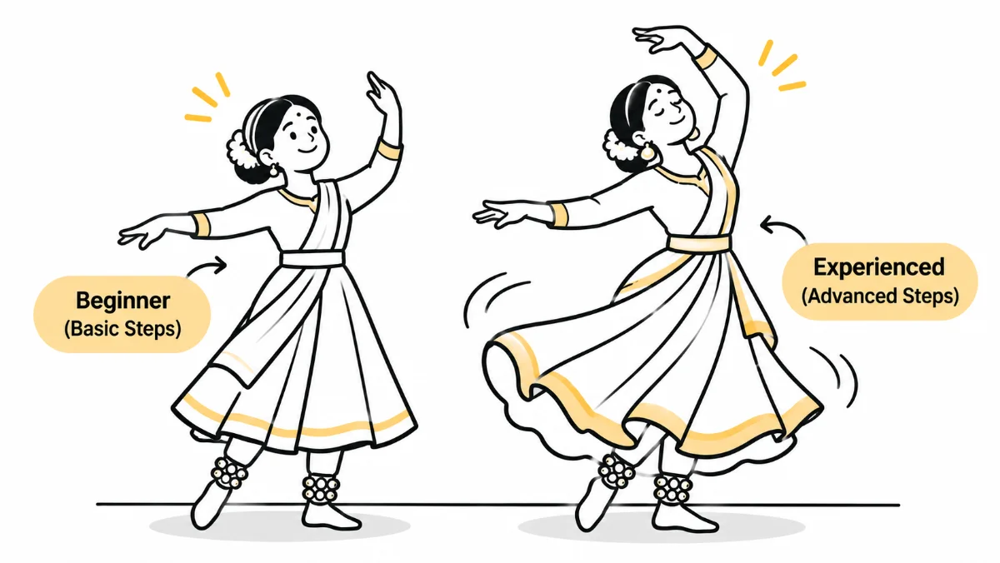

HeuristicsH7Flexibility and Efficiency of Use
Every user has a rhythm. Design should honour it
Your product is used by first-timers who need guidance and veterans who want to move fast. Designing for only one means failing the other. Great products grow with their users, from curious beginner to confident expert.

Welcome to Week 7 of my 10-part series on Nielsen’s Usability Heuristics, principles that shape intuitive and user-friendly products.
This week, we're talking about:
Heuristic #7: Flexibility and Efficiency of Use
Your product should grow with your user, not hold them back.
A Dance Class That Got It Right
Every weekend, I attend a dance class.
There are multiple batches, and due to time constraints, my instructor often merges two groups: seniors like me and the junior batch.
Now, here's the interesting part.
When teaching choreography, she:
- Gives us seniors the advanced footwork and techniques.
- Instructs the junior batch to follow a basic version of the same steps.
This way, both batches:
- Learn the same choreography.
- Feel challenged at their own level.
- Enjoy the experience equally.
If she taught only basic steps, we seniors would get bored.
If she taught only advanced moves, the juniors would feel overwhelmed.
Her job is to balance both, and she does it well.
Now, let's apply the same thinking to UX design.
Design for First-Timers and Frequent Flyers
Digital products are used by all kinds of people:
- First-time visitors who need guidance.
- Experienced users who want to get things done quickly.
If your platform focuses only on helping beginners (with step-by-step walkthroughs, tooltips and explanations), experienced users may feel slowed down.
But if you design only for power users, assuming they already know everything, new users may feel lost and give up.
That's where flexibility and efficiency come in.
A good product should be easy to learn for beginners while also providing faster ways to complete tasks for experienced users.
Real UX Examples
1. Flight Booking Sites
- For first-timers: A simple, step-by-step booking flow with helpful instructions.
- For experienced users: Autofill details, saved traveller profiles, and shortcuts that make booking faster.
2. Command Palettes (Like in Design and Note-Taking Tools)
Beginners can explore the interface visually and find options through menus.
Advanced users can simply press Cmd + K, type what they need, and get there much faster.
3. Shopping App Order Repeats
- New user? Browse a product, add it to the cart, and complete checkout.
- Returning user? Go to Buy Again and quickly reorder something you've purchased before.
The goal is to let everyone use the same product differently, depending on their comfort level and speed.
Key Takeaways
- Design flows that are intuitive for beginners.
- Add shortcuts, customisations, and accelerators for advanced users.
- Provide ways to skip help or unnecessary steps once users become familiar with the product.
- Think beyond just one type of user. Support the journey from beginner to expert.
Concluding Thought
Just like in my dance class, every user has a rhythm.
Your design should honour that by providing simple guidance to newcomers and faster paths for those who already know their way around.
When users grow, your product should grow with them.
Make it flexible. Make it efficient.
That's what makes a product truly powerful.
What's Next?
Nielsen's Heuristics as I See Them, Week 8: Aesthetic and Minimalist Design
Next week, we'll explore why less is more, and how visual clutter can affect usability.
Stay tuned.